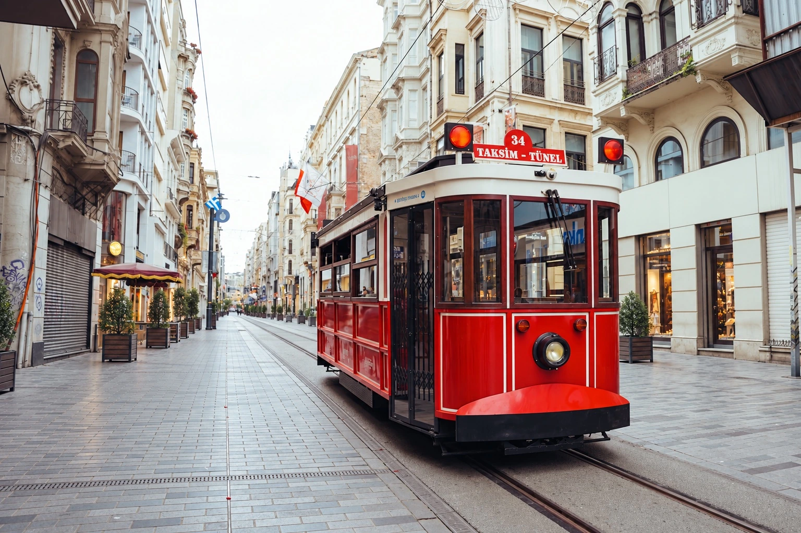
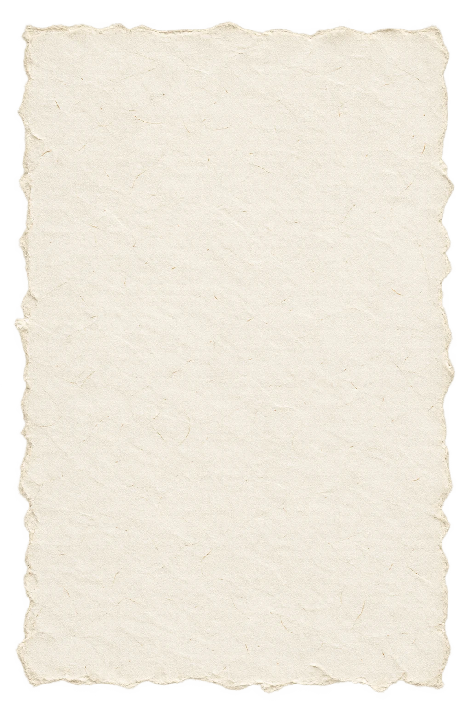

İstanbul · İstiklal Caddesi
Hikayemiz
İstiklal Caddesi’nin kalbinde kapılarımızı, aynı sofrada uzun uzun oturmayı seven herkes için açtık. Van kahvaltısının zenginliğini şehrin canlılığıyla buluşturuyoruz.
Bizim için güzel bir masa, yalnızca yemekle kurulmaz. Demli bir çay, özenle hazırlanan bir tabak ve aceleye gelmeyen sohbetler de onun parçasıdır.
İster güne kahvaltıyla başlayın, ister kısa bir kahve molası verin; İstiklal’in ortasında kendinize ait bir an bulmanız için buradayız.